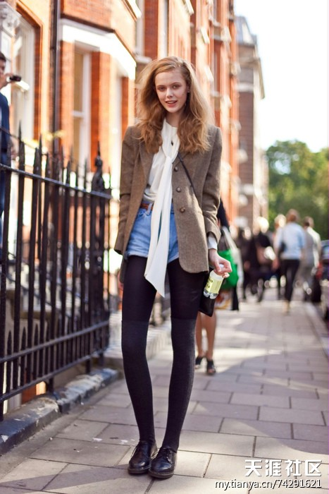
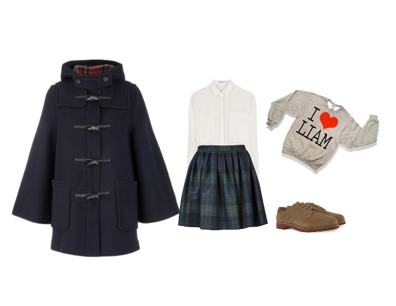
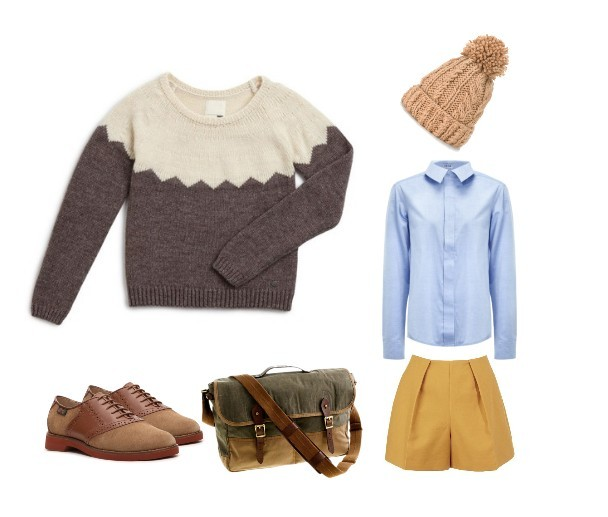
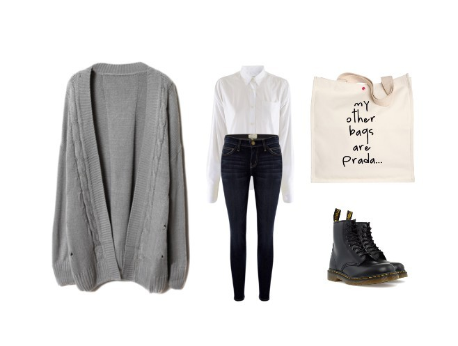
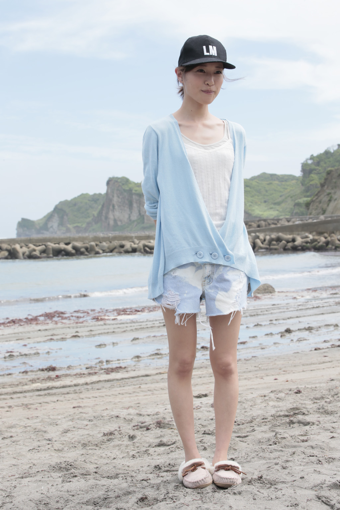
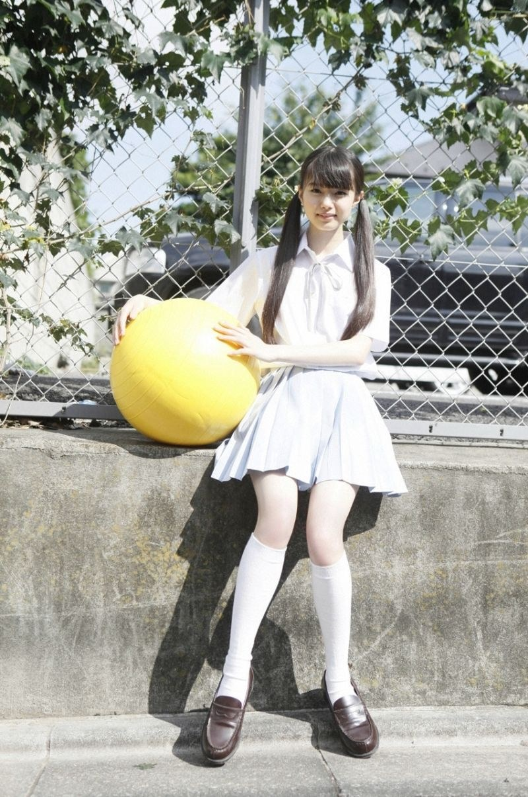
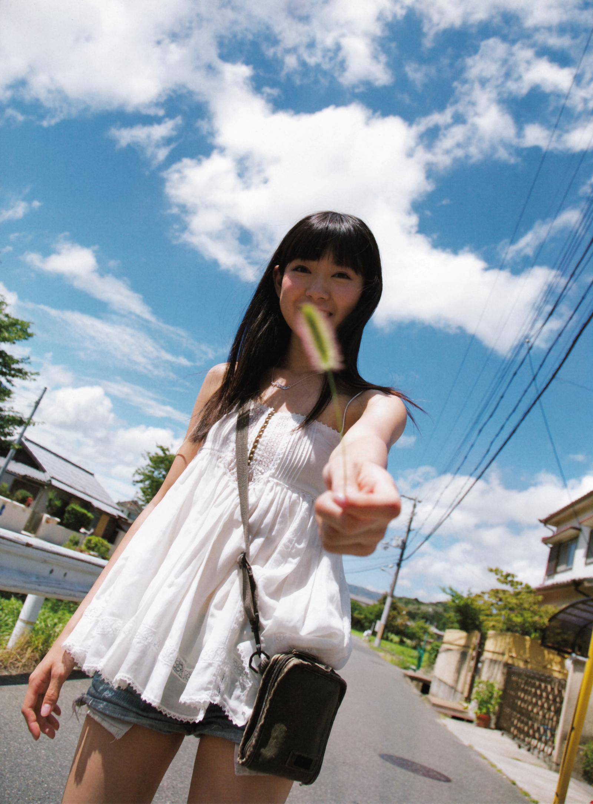
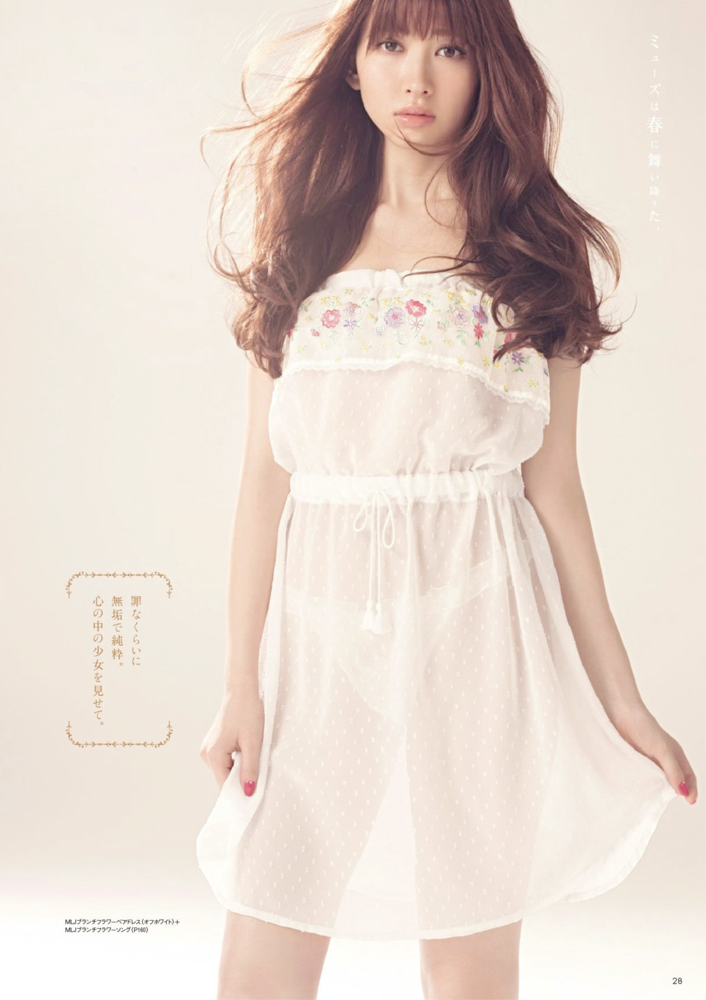
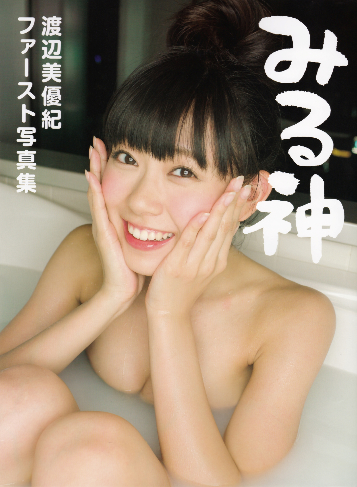
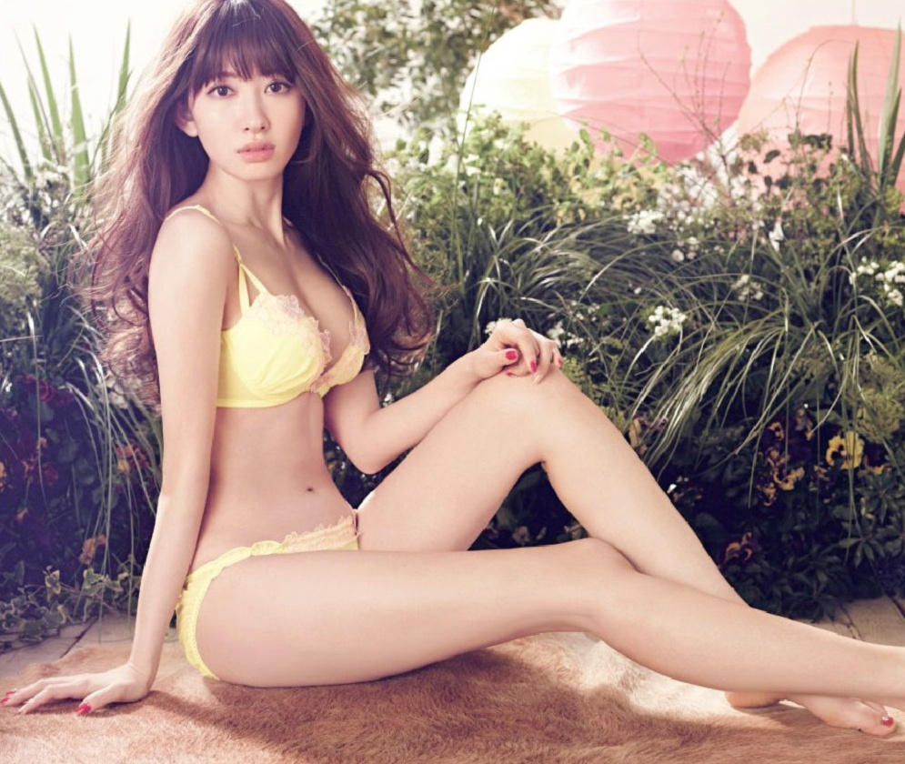

正文: 回答问题之前先羡慕一下楼主的好身材
老实说我其实分不太清一些搭配到底算不算英伦风尤其是看了目前排名第一的答案之后感觉涨了很多姿势 所以先暂且按着我的理解走
在我心里学院风英伦风很接近且都很小清新……！
我们先看几张图

（别问我为啥找的都是平胸妹子的图QAQ）
题主说想穿出这种风格我们就从最简单的办法入手，就是掌握这几件单品就造出XX风！！
他们的搭配很容易找出共通点，就是格子的运用，板正的衬衫，鞋子基本一个型。
1 胸大的情况下穿衬衫很容易……崩开！所以这个时候我们需要在胸前订好暗扣这样就会好很多，衬衫的所有扣子都要扣好！颜色的话选择藏蓝色，深红色，墨绿色为佳，衬衫型一定要好！因为英国就是给人感觉很绅士很沉稳很有质感，褶皱很多缝线很乱很low很不英伦了对把
2 英伦风对于格子的运用实在是太多了，图1的格子西装就很好看，但是！！不是所有的格子都英伦，不是所有的格子单品都值得入，具体哪些不值得看一下淘宝爆款就可以了。
（The Scottish Register of Tartans 可以去看看这个网站的格子样式啦，注册一下就可以看了有图样还有含义，感谢微博哈哈哈）
3 牛津鞋，bass鞋，马丁靴，选几双有质感的， 黑色棕色的个人觉得就超级起范儿！！还是回归到大胸这个问题上，我个人是觉得身高上去了大胸也就不那么明显了所以请来双内增高鞋垫 具体品牌请咨询黄教主
4 高腰线也是很好隐藏大胸的办法，理由同上，个子高了注意力也就转移一部分了
5 老实说英伦风的格子要素真的不太适合大胸（我就是嫉妒大胸LALALALLA），其实穿对内衣就很藏胸，有些内衣不那么聚拢的就不会那么大了。
提到学院风我们再看几张图
提到学院就想起牛角扣大衣啊！堪称学院风必备单品啊，首推藏蓝色你看霉霉的topshop牛角扣多美多美多美啊！！！来一件儿一下就学院了啊！！
我觉得学院风就是衬衫外面套点儿什么 （图一就是衬衫套卫衣 图二就是衬衫套毛衣 图三就是衬衫套开衫 ）颜色上就黄色蓝色灰色为主不太容易出错，你看棒国英伦风常ELAND常常主打的不也是这个风格吗，而且，套点儿啥之后胸就不那么明显了有没有！！看起来只是穿的多了点儿而已啊！！！开衫一套谁知道你是不是大胸啊！！！
学院自然就得走学生清纯路线，所以包包什么的就来个布包来个剑桥包，链条包杀手包什么的还是暂时塞到衣柜里吧。提到配饰，请千万不要搞个毛衣链什么的，毛衣链的长度刚刚好就把目光吸引到胸了……（让我再恨一下楼主的胸）
提到小清新好多人首先想到森女的娃娃衫什么的
那种款款松松的衣服真的藏胸吗？
完 全 不
来说一下我眼中的小清新，就是穿着简单不复杂，颜色清淡。继续上图

这样淡淡的蓝色自然就让人觉得清新了起来，穿的也完全不复杂自然就清新了
你说这不是大胸？
是不是看起来很清新？（同理都是颜色清浅穿着简单）
但是其实他们是这样的

其实胸并不容易显大，只要别把领子放那么低就可以了
（以上发言来自一平胸，并没什么参考价值：P）